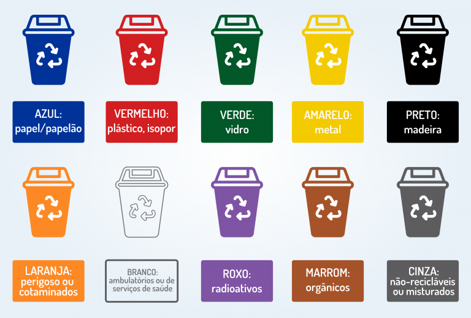

.png)
Por que reciclar?
A reciclagem desempenha um papel de extrema importância na preservação do meio
ambiente e na promoção da sustentabilidade em nossa sociedade. Ao adotar práticas
de reciclagem, contribuímos significativamente para a mitigação dos problemas
ambientais e para a construção de um futuro mais equilibrado e saudável.
Ao reutilizar
materiais como papel, plástico, vidro e metais, reduzimos a necessadidade de extrair novas
matérias-primas da natureza. Iso ajudda a proteger ecossistemas sensíveis, preservar
florestas, evita a exploração excessiva de minerais e reduzir a extração de petróleo.
A reciclagem geralmente requer menos energia do que a produção a partir de matérias-primas
virgens. Isso resulta em menor emissão de gases de efeito estufa, ajudando a combater as mudanças
climáticas. Ao reduzir a demanda por energia na fabricação de novos produtos, a reciclagem contribui para
conservação de recursos naturais não renováveis.
A reciclagem, portanto, vai além de um simples ato de descarte correto. Ela é um pilar fundamental para a
construção de um futuro mais resiliente e equilibrado, no qual os recursos são valorizados, a poluição é reduzida
e a qualidade de vida é preservada para as atuais e futuras gerações.
O que é coleta seletiva?
A coleta seletiva é um sistema de gerenciamento de resíduos sólidos com o propósito de separar diferentes tipos
de materiais recicláveis já na sua origem, que pode ser em residências, empresas e instituições. O objetivo principal
desse sistema é facilitar a reciclagem, diminuir a quantidade de resíduos que são levados para aterros sanitários
e contribuir para a conservação do meio ambiente.
No processo de coleta seletiva, os materiais são classificados em categorias específicas, frequentemente identificadas
por cores diferentes em recipientes, sacolas ou contêineres. Essas categorias abrangem materiais como papel, plástico,
vidro e metal, além, em algumas situações, de materiais orgânicos destinados à compostagem.
Cores da coleta seletiva

Fonte: Biocamp
- Azul (Papel e Papelão)
- Pode: folhas em geral, cadernos usados, livros, jornais, revistas, papelão, papel kraft,
embalagens de papel, envelopes e embalagens Tetra Pak.
Não pode: lenços, guardanapos, papel higiênico, fotografias, papel carbono ou metalizado,
papel celofane ou plastificado, fita crepe, etiqueta adesiva e papéis sujos de óleo ou graxa.
- Pode: folhas em geral, cadernos usados, livros, jornais, revistas, papelão, papel kraft,
- Amarelo (Metal)
- Pode: latas, alumínio, clipes, talheres de metal, materiais de aço, tampa de garrafa e latas tipo conserva.
Não pode: embalagens de tintas e produtos químicos, pilhas e baterias, embalagens contaminadas e esponja de aço.
- Pode: latas, alumínio, clipes, talheres de metal, materiais de aço, tampa de garrafa e latas tipo conserva.
- Vermelho (Plástico)
- Pode: Sacolas limpas, garrafas PET, embalagens de produtos de limpeza e frasco de cosméticos.
Não pode: embalagens de biscoito ou salgadinho e cabo de panela.
- Pode: Sacolas limpas, garrafas PET, embalagens de produtos de limpeza e frasco de cosméticos.
- Verde (Vidro)
- Pode: garrafas de bebidas, potes de vidro, cacos de vidro ou qualquer outra embalagem de vidro.
Não pode: espelho, cerâmica, óculos e vidro temperado.
- Pode: garrafas de bebidas, potes de vidro, cacos de vidro ou qualquer outra embalagem de vidro.